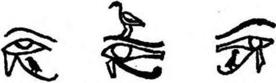

Şekil - 22
Solda, aşağıda ve yukarda, Gece Tünelinin girişinde, herbiri bir tann tarafından korunan iki Atebui. Her sabah, ışığı Anu- bis’inki ve Ölü-Osiris için olan Şafak Güneşi »Gün’e Çıkış Işığı» aşağıdaki Atebui'den (A. dan) çıkar. Göke doğru yükselir ve gündüz yürüyüşünün ortasında, (üstünde Horus ve Koç Başlı Khep- ra) Semdvi Nil’e dik bulunur. Sonra, tekrar inecek ve her akşam yukardaki (B. noktasında) Atebui de kayb olacaktır. Işığı Seth’in, öbür dünyanın olan güneş olacaktır. - Solda Güneş Kayığı, Nil boyunca, gündüzün on iki saatinin tanrısınca çekilmekte. Kayıkta, Heliopolis’in Bennou kuşu görülüyor. Bennou kuşu Osirisin evrensel ruhunun sembolüdür; sonra, kendi kendine şekil veren Khtpra ve koç başlı bir güneş tanrısı görülüyor. Yukarda ve aşağıda, sağda, Horus başlı yedi Doğum Tanrısı, Nil'in doğuşunda, ve insan başlı, Batının Yedi Tanrısı batı kıyısında duruyorlar. Hepsi Güneş Kayığının ortaya çıkışını selâmlıyor. -Netche- met Papirüsünden
Evet, korkunç bir lânet, uzun zaman, mezarının amber renkli ışığında, duvarlara resimleri yapılmış ölüm tanrılarının önünde Toutankhamon'un mumyasını seyredenlerin peşini bırakmadı. Keşfinden az zaman sonra, Lord Carnarvon can çekişmeye başladı ve korkunç vizyonlar içinde, Toutankhamon’un İsmini haykıra haykıra öldü. Albay Aubrey Herbert, kralın mumyasını görür görmez, hemen hemen o anda toprağa verildi; sonra, Lord Camarvon’a hastalığı süresince bakan hemşire, mezarda onu takip etti. Bütün Teb ovasında ağızdan ağıza «firavunun lânetlinden söz edilmeye başlandı. Howard Carter’in sekreteri, mezann açılışı sırasında hazır bulunan. Lord Wcstbury’nin tek oğlu, bilinmeyen bir hastalığa yakalanarak esrarlı bir şekilde öldü. Sonra sırasıyle, Howard Carter’in yakın dostu Profesör La Fleur, cenaze odasının duvarını delen Arthur Mace, Toutankhamon'un mezarına ilk girenlerden ve birkaç gün sonra kendini asan Doktor Evelyne White öldüler. Zamanın bir havâdis yazarı, bu sonuncu için «Ona yaşayacağı hayat yerine ölümü tercih ettiren bir lânetten öldü» demektedir. Sonra, Tountankhamon’un mumyasının radyografisini incelediğinin ertesi günü. Archibald Douglas Ree, anlatılmaz bir fenalık hissederek ânî bir ölümle öldü. Otto Neubert’in bize naklettiğine göre, bu kadar esrarlı ölümler hakkında, kendi adına araştırma yapmak isteyen bir Mısır hükümet mensubu, yanına bir yılan oynatıcısı alarak Krallar Vâ- dîslne gitti. Araştırmasına başlar başlamaz o da öldü! Bundan sonra da, Eski Mısırlıların öbür dünyasına yapılan bu meş’um seferden sonra, mumyaya ilk dokunanlardan biri olan Douglas Derry; Toutankhamon’un silahları arasındaki bir maşrapaya dokunan G. Davis; Lady Carnarvon, Profesör Breastead, Winlock, Hakness, sir Alan Gardiner. Foucard, Jay-Gould, Joel Woolf toplam olarak ON YEDİ KİŞİ ÖLDÜLER! Ayni ekipten bunca ölümü nasıl açıklamalı? Otto Neubert «Bir zehir miydi?» diye yazıyor; Mısırlılar zehirlerin karışımı hakkında çok büyük bilgi sahibi idiler. Rahipler ölü odasının taşlarını mı zehirlemişlerdi? Bazı bilginler etkilerini, özellikle Mısır’ın kuru ikliminde çok uzun zaman kaybetmeyecek zehirlerin mevcut olduğunu iddia ediyorlar. Gerçek her zaman bir sırla çevrili kalacak. Acaba bu, tanrıça
tsis’inki mi? Oakrldge atom şehrinde çalışan Amerikalı bilginler Mısırlıların atom sırrını bildiklerini farz ediyorlar.. Firavunun mumyasına, ısınmaları binlerce yıl etkili kalabilecek radyoaktif maddeler mi koydular? «Yalnız Doktor Howard Carter uzun yıllar, Ölüler Dağının gölgesinde, hiçbir canlının görmemesi gerekeni gördükten sonra, tam bir sağlık İçinde yaşadı...»
VIII. BAB
AMON MABEDİNDE MEDİTASYON.
Şimdi güneş daha yüksek ve terasımdan, altında onca firavun mezarı kazılı Batı Dağı’nı seyrediyorum. Soluk mavi gök altında daha koyu eflâtun renginde ve daha esrarlı görünüyor. Üçgen yelkenleri gerilmiş felukalar (İki direkli büyük sandal) Nil üzerinde ağır ağır kayıyorlar. Nehir kıyısını takip eden koca firavun incirlerinin gölgelediği yolda, çanak - çömlek ve domates sandıklan yüklü - şubat ayında domates çıkar - cesur eşekler, rahat bir tırısla ilerliyorlar; sahipleri sırtlarına binmiş ve gözleri sineklerle dolu. Nil'in karşı kıyısına sıralı, özenle ekilmiş tarlalarda, başı sorguçlu çavuşkuşları yiyecek arıyorlar. Biraz daha uzakta, sarı kumun, ovanın yeşil renginin birden yerini aldığı alan, uçsuz bucaksız ölüler şehri. Nil’in öbür kıyısında, koca dağların bulunduğu yerde dikilen bu ölülerin Teb’i, canlıların dev Teb'i karşısında, bugün acı düşünceler veren yıkıntı bir toprak parçasından başka bir şey değil. Orada binlerce yıl boyunca, tanrıların eşiti olacak ölüleri yüceltmek için vaktiyle kurulmuş o süslü şehrin anısını insan boşyere arıyor. Batı tepesinin, egemen olduğu Biban el Molouk'un kaya döküntüleri altında veya güneş altında yanan, Dante’nin cehennemine benzer vadilerde hiç bulunmayacak olan o kutsal şehir ne oldu? Orada, çölün talk kadar ince kumlarının parlattığı şekilsiz kalker direkler, dik yarlar, çökmüş koca kaya bloklarından başka bir şey görülmüyor. Bu ölüler Vadisi insanların bütün boş iddialarına korkunç bir meydan okuma içinde sanki. Bununla birlikte, tekrar ilkel kaosa dönmüş bu yerde, cehennem yalarmışçasına sizi yakan bu toprakta eskiden koç başlı sfenkslerin koruduğu yolları ile, sonu gelmez nekropolün yeraltı saraylarına hizmet edenler ve mumyala- yıcı san’atkârlara ayrılmış mabetleri ile, Ramesseum gibi, aydınlatılmış cenâze mabetleri İle XVIII. sülâle firavunlarının yirmi metre yükseklikteki kırmızı granitten dev heykelleri ile, Amon’un olan öbür Teb’in, göz alabildiğine uzanan, Nil’in öbür kıyısında, vahalar ve mabetler arasındaki yaşayanların Teb’i karşısında, ölülerin parlak büyük şehri yükselip gelişiyordu. Bu yıkılmış yerlerde binlerce ebediyet evi, resimli kapılarıyle, papirüs şeklindeki sütunları, Yüz Kapılı Teb’deki mabet kapılarının önünde olduğu gibi dalgalanan bayraklarla süslü direkleri, mezarların yerini gösteren piramitleri, zaman zaman mezar kuyularından, ışık ve bitki dünyasını, canlıların bilmediği canlıların cennetini, Nil’in mavi sularının tatlılığını ve gün batısının ânî güzelliğini yeniden bulmak üzere çıkan ölülerin zevki için yapılmış bahçeleri ile, dağlarda kat kat sıralanıyordu, ölülerin bakımı ve anı-

Şekil — 23
Kuş şekli altında ölünün ruhu, Horus'un gözüne, ışığın gözüne>; eriyip bu yaratıcı ışıkla birleşmek, ve kendisi de hayat kaynaklarının bir damlası olmak için, girip tırmanacaktır. - METİN: <geliyor, oujda’yı kucaklıyorum ve ışıkla sevineceğim.» - Ben Horus'un gözünde olacak olanım ve bedenim Horus'un GÖ- zü’nün canlandırıcı kokusu ile temizlenecek - «Horus’un gözünün Anti kokusuyla ovulduktan sonra, İşık Saçan olacağım ve o zaman ölü - Osirislerin organlarını ve kemiklerini birleştirebileceğim.» - a, Kûhtre Müzesinde bulunan ve bir Amon rahibesinin mezarından alınmış bir figür; b ve c, Torino Müzesindeki Nebt Habt papirüsünden. Mayassis’den alınmıştır.
sına hasredilmiş bayram günleri gelince, beyaz keten elbiseler giymiş Teb’liler Kutsal Batı Dağına hep birlikte tırmanıyor, âyin masalarına yiyecekler koyuyor, ve sevgili ölülerin dubleleri önünde sihir formülleri okuyorlardı...
İsis ve Osiris’in, babasının ölümünden sonra doğan oğlu Ho- rus’la dünyanın şimdiki zamanları başlar ve firavunlar, birbiri ardından, Horus'un hizmetkârları, tarih öncesi dönemlerin efsânevi kralları olurlar. Teb’de geçmiş döneme âit (arkaik) ilk sekiz tann ölür. Bu bölgede ölüler onları yüceltirler. Medinet-Ha- bou'nun sihirli ve canavarımsı yılanı Kem-Atef gibi. Louqsor’un gündüzleri bembeyaz, akşamları koyu eflâtun sokak aralarında gözleri gülen yaşlı Koptlar, (biz fr. Copte'un türkçe okunuşunu kullandık. Mısır’da, büyük bir olasılıkla Eski Mısır kavmlnden gelen halk; nitekim Champollion üç dille yazılmış ünlü Rosetta taş kitabesinden hiyerogliflerin okunuşunu çıkardıktan sonra Eski Mısır dilini çözebilmek için, yerli Kopt’ların dilinden faydalanmıştı. ÇN.) günümüzde de, uluyan rüzgârda, Nubye Amon'u- nun kızgın ruhunun, tanrılar olan firavunların mezarlarına tecâvüz edenleri lânetleyip İnlediğini anlatırlar. Akşam üzerleri, azalmakta olan aydınlıklar içinde gökyüzü daha şeffaf görünürken koklanan mür ve diğer kokuların, Hathof un terleri olduğunu söylerler. Güneşe ve ölülere, alt dünyalara girdikleri zaman yardım eden, Batı tanrıçası Hathor’dur. Bu Eski Mısırlıların gerçek torunları, Ölüler Tanrısı Osiris’in, onun bedeni olan nehrin suyunda her zaman mevcut ve etkin olduğunu, onun bedeninin ve bu suyun, her şeyin tohum ve ışınması olduğunuda söylerler. Tıpkı Nil’in mavisinin; kıyılarında, ebediyetin geleceğinde, tarlalarının ürününü alacakları Semavî Nil'in yansıması olduğu gibi...
Ey Amon-Râ, bu tatlı ve sıcak Teb gecesinde seni İçtenlikle çağırıyorum; çünkü sen, Bâbil’in Mardûk'u gibi zâlim ve egoist değilsin. Issız mabedinin ayla aydınlanmış uzun yollarında, her adımda senin mevcûdiyetini hissettim. Benim çevremde asılsız bir şimdiki zamânın şekilleri kaybolurken senin kutsal kentinin büyük yapıları tam gerçek mi idiler? Koç başlı Amon-Râ, seni, canlıları kendilerinde oluşmuş bulunan her şeyin bundan böyle beden dışında, veya dışta olanın beden İçinde olacağı bir evrene çekecek korkunç kuvvetlerin çağırılacağı gibi davet ettim. Belki de zamanların sonsuzluğunun her Ölüye sokuluşu böyledir... Seni andım ve çağırdım, ey Teb tanrısı; ve, tersine bir dünyada Gecenin On İki Kapısına doğru İndim. Amon-Râ, tanrılarla dolu karanlıklarda kimdin, değil mi ki ölüler tanrı oluyor? Galaksiler yok olana kadar ölüler âlemindeki ateş gölleri yansın, Apop- hls bu âlemi kıvrımlarıyle (Apophis yılanının kıvrımlarının çok eski bir sembol olması gerek; Hemen her eski uygarlıkta bu spiral sembolleri görülüyor. ÇN.) doldursun, her gece on iki bölgede, ellerinde tuttukları yılanların yardımı İle ölülerin çektiği Güneş Kayıkları süzülsün! Bu Mısır gecesinde, hatırladığım fi- ravun’un duası ne kadar güzel ve saf: Sana doğru geliyor, mabedin iç bölümünü (naos) ateşle kutsuyor, alevlerin üzerine tütsü tanecikleri serpiyor, heykelinin Önünde secdeye kapanıyor, mezet boyasını, alkışlar kokusunu, safi yağını, Lübnan ve Libya kokularını takdim ediyordu. Seni yüceltiyordu; çünkü insanlara, ölüm olan öbür dünya İçin dublelerini ve gereksinmeleri olan yiyecekleri verdin. İSMİNİ KUTLUYORDU; çünkü gökü yarattın, insanların yararlandığı zevk ve aşka, Hou ve Sû’ya sahip oldun; gökte kapalı olanları, kıvılcımlı parlaklığının bağrında yüzlerini parlatanları ne sınır ne de başlangıcı olan kendinde birleştirdin... İnsanlarca yıkılmış ıssız mabedinde bu gece seni çağırıyorum; çünkü sen İlk Noun'dan, ilkel kargaşadan (kaos) kendini kurtaran, «kalbi hiç yorulmayan»; varlıkların yaratıcısısın. Senin ma- bedindedir ki, ey Amon-Râ, önümde Gecenin On İki Kapısının açıldığını gördüğümü sandım. Ey mezarlarımızı zorlayıp altınlarımızı, yiyeceklerimizi, papirüslerimizi, kuş-ruh’larımızı, keten sargılarımızı soyanlardan çılgına dönmüş ölüler, yaşamınızı hatırlayınız! Gün ışığından sihirli heykelciklerinizin refâkatinde nasıl çıktınız? Işıklı «kozmik yumurtayı» sırtlan nefesinden daha pis kokan, cehennemin çeşitli katlarındaki ruhları nerede gördünüz? Salonlara girerek ışık veren asâların önünde iç organlarınızı selâmladınız mı? Yolunuzun üzerinden, aşağıda veya yukarıda bulunuşlarına göre, on iki burç veya pisliklerle beslenen timsah ağızlı sekiz şeytanı kovmasını bildiniz mi? Tuzaklardan, İplerden, ısırıklardan, ağlardan, tırmıklardan, başıboş dolaşan ve dehşet salan isimsiz şeytanların öldürücü nefeslerinden kaçınmayı bildiniz mi? Yaşamış olduğunuz zaman sizde olan her şey, örneğin iç organlarınız ve ruhunuz binlerce yıldan beri, artık sizde yok. Gökyüzünde boynunuzun dört omurunu düzeltecek, firavun incirleri altında Anubis mabedinin kutsal ekmeklerinden yiyecek, saflaşacak, milyonlarca yıl için saflaşacak, Ptah'ın semâsına doğru baloncuklar gibi yükselen gezegenleri ve gökteki Aby- dos’u, uzayın dört bölgesinin dört direğini, bedensiz ruhların plazmasını, parıl parıl ka’ları ve «Kamış Tarlasının», Sekht- İalou'nun on dört adasını seyredeceksiniz...
Gece geldi... Beyaz evlerinin eşiğine oturmuş ihtiyarlar görüşüyor; uzun beyaz entârllerl (Djellaba) içinde çocukların gözleri gülüyor, birbirlerinin kollarını tutuyorlar. Nil kıyısındaki bu Mısır akşamlan, sokak aralarında hâlâ, devam eden bir sera sıcaklığına rağmen, ne kadar tatlı. Yaşama sevinci burada daha berrak, daha anlamlı. Ayaklarımın altında, gece güneşinin büyük olayı İçin ölüler dünyası uyanırken, tanrı-nehrin derinliklerinden, Krallar Vâdîsinden dönüşte öbür sahilde görülebilen Louq- sor’unkine benzer mabetler ortaya çıkıyor. Gece oldu. Mavi ve beyaz maşlahlar giymiş fellâh gurupları karşı karşıya geliyor, birbirlerine sesleniyorlar; İslâm evliyalarının türbelerine adaklarını koyacaklar; dükkâncılar küçük tezgâhlarında insanların düş güçlerini besleyen baharat ve altınlarıyle kapanıyorlar. Gözalıcı renklerde eteklikleri İle, hoşa gitmek için sürdükleri düzgün gözlerini büyük gösteren neş’eli fellâh kadınlarının geçtiğini görüyorum. Biliyorum ki yarın, bayram günü, vücutlarına lavanta ve rezene kokuları sürecekler; gerdanları mücevher ve altın para ile dolu olacak. Bu hazineler göğüslerini süsledikçe, bunlara mâliye bile dokunamaz. Her ne kadar aldırmaz karakterli iseler de, kem gözden sakınmak için evlerinin kapısı önüne bir çivi parçası koyarlar. Firavunlar döneminde olduğu gibi, Nil balıklarını tuzlamasını ve kaz kavurmasını çömleklere yerleştirmesini bilirler. Güler yüzlü ve geveze kız çocukları Levanten (fr. Levantin: Orta Doğuda yerleşmiş Yunanlı, Ermeni, İtalyan, Fransız vs.lerin karma ailelerinden hıristiyan ahâliye verilen bir sıfattır.) dükkâncıya, köylülerin sebze bahçelerine döktükleri güvercin gübresi dolu sepetler götürürler. Ateşli hastalara biraz canlandırmak için verilen o ünlü Coptos şarabından, burada hâlâ bulmak kâ- bildlr. Eskiden bu Horus yıldızı şarapları o kadar ünlü idi kİ yapım yılı kabın karnına işaretlenmeden hiç bir anfor ihraç edilemezdi. Gece oldu... Çocukların berrak seslerini, ovadaki kurnaz çavuş kuşlarının son ötüşlerini dinliyorum. Uzakta dervişlerin makamla okuyuşları (ezan olacak; ÇN.) cinlerin kederlenmelerini hatırlatıyor. Karnak kobrası, sahibinin fotoğraf makineleri önünde hünerlerini gösterdiği bu ünlü evcil kobra, günün sıcaklığını koruyan bir duvar oyuğunda çöreklenmiş olmalıdır. Birazdan ay, Batı Dağının tepesinden gözükecek; cenaze mabetlerinin avlularını koruyan dev Osiris heykellerini, kutsal gölleri, göz alabildiğine uzanan harâbelerin sonsuzluğunu aydınlatacak. Bu harâbeler sâyesinde, Yüz Kapılı Teb’in nasıl olduğunu ve Mısır uygarlığının parlaklığını tahayyül edebiliyoruz. Onca sırrı bağrında taşıyan toprağın derinliklerinde, mezarları daha üç bin yıl evvelden soyulmuş nekropollerin diplerindeki duvar resimlerinden, ölüler Kitabında tanımlanan öbür dünyanın nasıl bir yer olduğunu azar azar keşfediyoruz. Bu, bizim için hasisçe ayrılmış yaşam süresinden kaçabilmemiz, onu bir an için silmemiz kabil mi? Onu eski zamanlarla değiştirebilir miyiz? Ey koç başlı, çömlekçi çarkında insan varlıklarına şekil veren Khnoum, Memfis’in Ptah’ı gibi, üç bin yıl geriye bir adım atılabilir mi? Bu adımı ben attım. O akşam, tanrının, halkıyle birlikte Teb mabetlerini zi- yâret ettiği Yıllık Alay günü Amon-Râ’nın kutsal kayığının vaktiyle bağlamaya geldiği eski rıhtım boyunca yürüyordum. Amon mabedinin giriş kapısının önünü gözleyen kırk sfenksin önünden geçtim. Gerçekten, tavanı sütunlarla tutturulmuş salonun döşeme taşları üzerinde adımlarımın ne acayip bir sesi vardı! Bize, bir kitabın sayfalarında olduğu gibi, firavunların ve Mısır tanrılarının çok uzun tarihini, mutlu zaferleri, «sulh ve kardeşlik antlaşmaları» ile sözleşmeleri anlatan Assouan granitinden yüz otuz sütun arasında konstellasyonların takım yıldızların parladığı tavanı gördüm. Ay ışığı altında, tanrıların doğru buldukları ölüler önünde açıldığı gibi, yalnız benim İçin, gökyüzü kapılarının açılacağını sandım. Ama mabedin döşeme taşları üzerinde inisiyelerin adımlan ne İz, ne de tozlarının tozunu bırakmıştı... Ancak gökyüzü, gezegenleri, yıldızlan, galaksileri, patlamış güneşlerin âni parıltısı içinde yok olmakta olan ölü dünya- ları ile, evet, yalnız gökyüzü, dört bin yıl evvelkinin aynı idi... Ve bu gökyüzü, herbiri ellişer bin yıl saltanat süren firavunların masal döneminde yaşayanların belki de korktukları aynı gökyüzü idi!
Tepelikli çavuş kuşları uzun zamandan beri mabet harabelerinde uyudular ve palmiyeler hareketsiz. Karnak mabedinin yedinci kapısı önündeki herbiri 350 ton ağırlığında ve elli metre boyundaki dikilitaşlar nerde? Mabetlere «gökyüzü durdukça durmaları ve otuz yüzyıl sonra gelecek olanlar tarafından görü- lebilmeleri» için yerleştirilmiş, kralların anıt şekilleri nerde? Ramesseum’un herbiri 1000 ton ağırlığındaki dev heykelleri nerde? On dört metre yükseklikte, altın ve çini hamuru ile kaplanmış, eski Teb'in kutsal duvarlarının eski kapılarını yeniden yapmak isteyen Ptoleme’lerin yüz kapısı nerde? Ouserhat kayığı, altmış kürekçinin hareket ettirdiği, teknesi altın kaplı, kabartmalarla süslü Amon’un kayığı ne oldu? «Vâdî Bayramı» günü nehrin kıyılarına toplanmış halk, Amon’u altın ve gümüş karışımı (Elektrum; tanrı, sandaldaki küçük köşkünde (kasrında) idi.) anber renkli kasrında ve geminin önünde, üç tanrıdan ibâ- ret mürettebatı ile giden mistik kayıkla Nil boyunca inerken gördüğünde, gemiyi alkışlıyordu. O üç tanrıdan Anubis başta duruyordu; çünkü o «Güney yollarının açıcısı» idi; kilden İnsan şekillerini çıkaran ve her günkü güneşin içini aydınlattığı dünya yumurtasını biçimlendiren Khnoum; Horus; fakat evrenin yan sahibi olan Horus değil, Piramitlerin programlayıcısı tanrıların Horus’u. Evet, Vâdinin bu yıllık Bayramında Mısır’ın tarih öncesi en eski iki başkentinin anısını canlandırmak için çakal ve atmaca maskeleri takmış otuz rahibi ile Ouserhat kayığı ne oldu? tanrıların ve tanrıların oğulları olan firavunların yaşamını tasvir eden kabartmalarla süslü kaymak taşından, küçük mabetler, Nil Vadisinin sekizde birine sahip ve doğumlarından önce firavunların kaderini tespit eden Amon’un beş bin iki yüz heykeli ne oldu? «Sesi doğru« IV. Ramses, sana ölüler Kitabında öğretildiği gibi, bu mabede, sembolik güneş ve yılanla taçlanmış Ho- rus önünde tanrıça Ament’in bir heykelini hediye eden ve karşılık olarak Ankh, yaşam işâreti, sırların anahtarını, tanrıların ruhunun ölümsüz tabiatına tekâbül eden, yuvarlağı ile, ne gözüken başlangıç ne de sonu olan yuvarlıklı (ansee) haçı, inisiyenin transının son kademesini simgeleyen haçı alan sen, neredesin? Fakat karanlıkların kuşu haykırdı ve firavunun, veya dublesinin hayâli, mimarlık yapısı, altın oranlar kanununa uyan mabedin şeffaf duvarlarından geçerek kayboldu. Cenâze mabetlerinin yüksek ve canlı sütunları, açık veya kapalı, mimar tarafından hareketi tespit etmek için düşünülmüş - üzerine konulmuş olduğunuz temellerde büyüyen ayın farklı fazlan okunabilir - şâhit olduğumuz olağanüstü olayların anısını bir iz olarak saklayabildiniz mi? Osiris’in ölüm dramı kutlandığında ve yeniden dirilişinin çeşitliliği gölgeler arasında tekrar söylendiğinde yabancılara yasak olan yeraltı mabetlerinde (Cryptes) hangi sırlar açıklandı? Kutsal Abydos gecesinde, kutsal Karnak gecesinde ve zamanların gecesinde, şarkı söyleyen Amon rahiplerini işitiyorum ve elleri çiçeklerle dolu tapman kalabalıkların mabetlerin teraslarına çıktıklarını görüyorum... Dendârah teraslarında müzik zaman zaman çarpıcıdır; malakitten (yeşil damarlı bakır taşı; kıymetlidir) mücevherlerle süslenmiş ve keten giymiş bu dünyanın ve öbür dünyanın tanrısal tapınıcı kadınları, hayvan yüzlü tanrıların odalıkları, zevk alıp coşarlar; ey Amon, şerefine yapılan kutsal danslardan sonra fuhuş yapacaklar, kötü tesirleri kovan sihirli bir alet olan utlarını (slstre) çalarak, onları yakalayıp birleşmen için, ey Teb’in Amon’u, senin evine gelecekler ve «göke çıktıkları» zaman - çünkü Mısır’da ölünmez; göke çıkılır - karıların, ey Amon, bütün Ölülere vaad edilmiş olduğu gibi, sonu gelmez evrende güneş kursları olacaklardır. «Gökyüzünün Kapılarının Açıcıları« olan büyük rahipler, Osiris’in önünde «Tartılmış Sözün Gecesi»nden sonra adlandırılmış, temize çıkan ölülerin gökünde, onların bitmez tükenmez bir parıltı ile parladıklarını göreceklerdir. Onları daha İyi' görmek için yedi kademeyi ağır ağır tırmanacaklardır. Bu yedi kat, kendisine yükselmenin yolu açıklanmışlar için, yaratılmış kâinattan bilinmez ebediyete, bozulmaz ölülerin önüne açılan kapılara. Yüksek Kademelerin Işık Saçan Ruhları önüne, yıkım şekilleri ve Yeniden Doğuş şekilleri önüne, zamanların başından beri ölüler Kitabında yazıldığı gibi direkleri üzerinde oturan Râ’nın önüne gider. ÇÜNKÜ HERŞEY, EZELDEN BERİ «ÖLÜLER KİTABINDA» YAZILMIŞTIR... EVET. EZELDEN BERİ...
KAYNAKÇA
ALLEN, G., Horus in the Pyramidal Texts. Chicago, 1916
AMÊLINEAU, E., La Géographie de l’Égypte. Paris. — Étude sur le Chapitre XVII du Livre des Morts , «Journal Asiatique»,T. xv et xvi. Paris, 1910.—Prolégomènes à l’Êtude de la Religion Égyptienne, T. n. — Un Chapitre difficile du Livre des Pyramides, «Journal Asiatiqueû. Paris, 1913.
AYRTON, E. R., CURELLY, C. T. et WEIGALL, A. E. P.. Abydos. Londres, 1904.
BAILLET. J., Idées morales de l’Égypte antique. Paris.
BIRCH, S, The Funeral Ritual of Book of the Dead. Londres, 1867.
BLACKMAN, A. M., The Ka-housc and the Serdab, «Journal of Egyptian Archaeology», T. ui. Londres, 1916. — The Rock Tomb of Mer. Londres, 1914.
BUCK, A. de. The Earliest Version of the Book of the Dead, «Journal of Egyptian Archacology». Londres, 1949.
BUDGE, Sir E. A. Wallis, The Book of the Dead, Facsimiles of the Papyri of Hunefer, Anhai, Kerèsher and Netchemet, with Supplementary Text from the Papyrus of Nu Londres. 1899 — Egyptian Sculptures in the British Museum Londres 1914 — Osiris of the Egyptian Resurrection. Londres. 1911, — Ideas of the future Life. Londres, 1908.
CADET, Copie figurée d’un Rouleau de Payrus trouve à Thèbes dans un Tombeau des Rois. Vienne. 1822.
C APART, Jean, L’Art Egyptien. Études et Histoire. Bruxelles, 1924. — Une Rue de Tombeaux à Saqqarah. Bruxelles, 1907. — Les Débuts
de l’Arien Egypte. Bruxelles, 1904. — Chambre funéraire de la Vie Dynastie aux Musées Royaux du Cinquantenaire, Bruxelles, 1906. — Recueil de Monuments égyptiens. Bruxelles, 1902.
CHAMPOLLION. Monuments de i’Êgypte et de la Nubie. Paris.
CHASSINAT, E et PALANQUE. Ch, Une Campagne de Fouilles dans la Nécropole d’Assiout, «Mémoires de l'institut Français d’Arché- ologie Orientale». Le Caire, 1911.
DARESSY, G., Hymnes à Khnoum, «Recueil' des Travaux relatifs à la Philologie et à l’Archéologie égyptienne et assyrienne*, T. xxvn. Paris. — Seth et son animal, «Bulletin de Hnstitut Français d’Arché- ologie Orientaie», T. xiu. Le Caire, 1917, — Inscriptions du Mastaba de Pepinefer à Edfou, «Annales du Service des Antiquités», T. xvu. — Le Mastaba de Mera, «Mémoires de l’institut Égyptien», T. m. — Note Explicative de Médinet-Habou, Le Caire, 1897.
DAVIES, Norman de Garis, The Tomb of Nackht at Thebes, with Plates in color by L. Crane, Norman de G. Davies and F. S. Unwin of the Egyptian Expedition and Nina de Garis Davies. Publications of the «Metropolitan Museum of Art», Robb de Peyster Titus, Memorial Series, Volume Î. Edited by Albert M. Lythgoe, curator of the Department of Egyptian Art. New-York, 1917. — The Tomb of Puyemrê at Thebes, with Plates in color by N. de Garis Davies and H. R. Hopgood of the Egyptian Expedition. Publications of the «Metropolitan Museum of Art*. Edited by Albert M. Lythgoe, Robb de Peyster Titus, Memorial Series, Volumes II et III. New-York, 1922 - 1923.
DAVIES, Nina M., Ancient Egyptian Paintings, selected, copied and described by D.. with the Editorial Assistance of Alan H. Gardiner. Special Publication of the ^Oriental Institut of the University of Chicago». Chicago, 1936. Édition française traduite et adaptée par ALBERT CHAMPDOR. Paris, Éditions d’Art Albert Guillot, 1954.
DEMEL, Hans von, Dcr Totenpapyrus des Khonsou-mes, Vienne, 1944.
DENON, Voyage dans la Basse et la Haute-Égypte pendant les Campagnes du Général Bonaparte. Paris, An X.
DESROCHES-NOBLECOURT, Les Religions Égyptiennes, «Histoire Générale des Religions». Paris. 1948.
DEVAUD, Maximes de Ph’ Ahotep, Fribourg, 1916.
DEVÉRIA, Catalogue des MSS Égyptiens écrits sur papyrus... Paris, 1862.
ENGELBACH, R., Riqqeh and Memphis VL Londres, 1915.
ERMAN, A., La Religion des Égyptiens. Paris, 1937.
FAULKER, R., The Brcmner-Rhind Papyrus. The Songs of Isis and Nephtys, «Journal of Egyptien Archaeology.», T. xxn. Londres, 1936.
FOUCART. Les Mystères d’Eleusis. Paris.
FRANKFORT, H., The Cenotaph of Seti I at Abydos, «Egyptian Exploration Society». New-York, 1933.
GARSTANG, J., Tombs of the third Egyptiaa Dynasty at Rcqaqnah and Bet Khallaf. Londres, 1904.
GAUTHIER, Les Fêtes du Dieu Min. Le Caire, 1931.
GOLÉNISCHEFF, Les Papyrus hiératiques No 1115, 1116 A et 1116 B du Musée de PErmlfage Impérial à Sa:>nt-Pctcrsbourg. Saint-Pétersbourg, 1913.
GRAILLOT, Le Culte de Cybèle, Paris.
GRÉBAUT, E., Des Deux Yeux du Disque Solaire, «Recueil des Travaux relatifs à la Philologie et à TArchéologie égyptienne et assyrienne», T. i, Paris. — Hymne à Amon-Râ. Paris, 1874.
GUIEYSSE, P. et LEFÉBURE, E., Le Papyrus funéraire de Soutlroés. Paris. 1878.
K.OLPAKTCHY, G., Livre des Morts des Anciens Égyptiens. Paris, 1955.
HORRAK, J. de. Les Lamentations d'Isis et de Nephthys.
JÉQUIER, G.» Considérations sur les Religions Égyptiennes. Neuchàtel, 1948. — Douze Ans de Fouille» dans la Nécropole memphite, «Revue d’Histoire des Religions». Paris. — Les Temples memphites et thèbains, des Origines à la XVflTe Dynastie. Paris, 1920. — Les Frises et Objets de Sarcophages du Moyen Empire, «Mémoires de l’institut Français d’Archéologie», T. XLVII. Le Caire, 1921.
LACAU, P., Textes Religieux. — Sarcophages antérieurs au Nouvel Empire, «Catalogue Général du Musée du Caire». Le Caire. 1904.
LANGE, H. O., Der Magische Papyrus Harris. Copenhague, 1927.
LANOË-VILLÈNE, G., Le Livre des Symboles. Paris.
LE PAGE-RENOUF, The Book of the De ad, facsimile of the Papyrus of Ani in the British Muséum. Londres, 1890.
LEFÉBURE, Le Livre de lUadès, Traduction de L., «Bibliothèque Egyptologique», T. x. — L’CEuf dans la Religion cosmique, «Revue d'Histoire des Religions», T. xvi. — Les Yeux d Horus, «Bibliothegue Egyptologique», T. 1. — Étude sur Abydos, «Bibliothèque», T. 11. — Le Livre de ce qu’il y a dans l’Hadès, l’Amtuat, «Bibliothèque Egyptologique», T. u. — La Lumière zodiacale en Egypte, «Bibliothèque Egyptologique», T. ni.
LEFEBVRE, G., Textes du Tombeau de Petosiris, «Annales du Service des Antiquités», T. xxi, 1921.
LEGRAIN, G., Le Livre des Transformations. Paris.
LEPSIUS, Todtenbuch der Aegypter. Leipzig, 1842.
LIEBLEIN, Dictionnaire des Noms hiéroglyphiques. Paris.
LYTHGOOE, A. M, The Treasure of Lahun, «Bulletin of ihe Metropolitan Muséum of Art», Part. II. New-York, 1919.
MACE, A. C., The Caskets of Princess Sat-Hathor-Junut, «Bulletin of the Metropolitan Muséum of Art», T. xv. New-York, 1920.
MARIETTE, A., Dendèrah, Paris. — Abydos, Paris. — Les Mastabas de VAncien Empire. Paris, 1889. — Le Sépareum de Memphis. Parte, 1882.
MASPÉRO, G., Etudes d’Archèologie et de Mythologie Égyptienne, «Bibliothèque Egyptologique». Paris. — Mémoire sur quelques Papyrus du Musée du Lottvre. Paris. — Le Rituel du Sacrifice fu- nèrairc. Paris — Les Inscriptions des Pyramides de Saqqarah, Paris, 1894 — Le Double et les Statues prophétiques, «Etudes de Mythologie et d’Archéologie Égyptiennes», T. 1. Paris, 1893.
MAYASSIS, S., Le Livre des Morts de l’Égypte Ancienne est un Livre d'initiation, «Bibliothèque d'Archéologie Orientale d’Athènes. Athènes, 1955.
MAYSTRE, Les Déclarations d Innocence. Le Caire, 1937.
MERCER, Samuel A. B.. The Pyramids Texts. Londres, New-York, 1952.
MORET, A., Le Rituel du Culte divin journalier. Paris, 1902. — Mystères Égyptiens. Paris, 1913. — Le Nil et la Civilisation Égyptienne. Paris, 1926. — La Mise à mort du dieu en Égypte, Paris, 1942. — Horus Sauveur, «Revue de l’Histoire des Religions», Paris, 1915. — Rois
et Dieux d’Égypte.
MONTET, P., Les Scènes de la Vie privée dans les Tombeaux égyptiens de I’ Ancien Empire, Paris, 1925....,
MURRAY, M. A., Saqqarah Mastabas. Londres, 1905.
NAVILLE, E., Das Aegyptisehe Todtenbuch der XVIII bis zur XX Dynastie. Berlin, 1886. — Les Têtes de pierre déposées dans les Tombeaux égyptiens. Genève,, 1909. — Les Amulettes du chevet et de la tête. «Zeitschrift für ägyptische Sprach und Altertumskunde», T. XLVIII, 1910. — Papyrus funéraires de Kamära et de Nesikhonsou. Paris, 1912. — The Xltb Dynasty Temple at I>eir ei-Bahari. Londres, 1907 - 1910.
PETRIE, W. M. F., The Royal Tombs of the First Dynasty. Londres. 1900. — The Royal Tombs of the Earliest Dynasties. Londres, 1901. — Denderah. Londres, 1900. — Abydos. Londres. 1903. — Qurneh Londres, 1909
PEYRE, M., Atys et Osiris, Paris, 1026.
PINANKÖFF, A., The Tomb of Ramcsses VI. New-York, 1954. — Le Livre du Jour et de la Nuit, «Institut Français d’Archéologie Orientale». Le Caire. 1942. — Le «Caur» dans les Textes Égyptiens. Paris, 1930.
P1ERRET. Papyrus funéraire de Nebset. Paris, 1872. — Le Livre des Morts des Anciens Égyptiens. Paris, 1882.
PLEYTE, W., Chapitres supplémentaires du Livre des Morts, Traduction et Commentaire. Leyde, 1881.
POERTNER, B-, Die ägyptischen Totenstelen als Zeugen des soziales und religiösen Lebens ihrer Zelt. Paderborn, 1911.
RANDALL-MAC1VER, D. et MACE, A. C., El Amrah and Abydos, Londres, 1902.
REVILLOUT, Rituel funéraire de Pamouth. Pari«.
ROUGÉ, E. de, Études sur le Rituel funéraire des Anciens Égyptiens, «Revue Archéologique». Paris, 1860. — Inscriptions de la Sépulture des Apis, «Bibliothèque Égyptologique», T. II.
SMITH, G. E., A Contribution to the Study of Mumification in Egypt,
«Mémoires de l’institut Égyptien», T. V. Le Caire, 1906.
SPELEERS, L., Textes des Pyramides Égyptiennes. Bruxelles. — Textes des Cercueils du Moyen Empire Égyptien, Bruxuelles, 1946.
STEINDORFF, G., Das Grab des Ti. Leipzig, 1913.
Tombe de Ramsès IX. Mémoire public par les Membres de la Mission Archéologique Française du Caire», T. III. Le Caire.
VANDIER, J., La Religion Égyptienne. Paris, 1944.
VIREY, Ph., La Religion de l’Ancienne fcgyptc. Paris, 1910. — Le Tombeau de Rekhmàra. Paris, 1889.
WEILL, R., Le Champ des Roseaux et le Champ des Offrandes. Paris, 1936.
WINLOCK, H. E., The theban Necropolis in the Middle Kingsdom, «The
American Journal of Semitic Languages and Literature». T. XXXII.